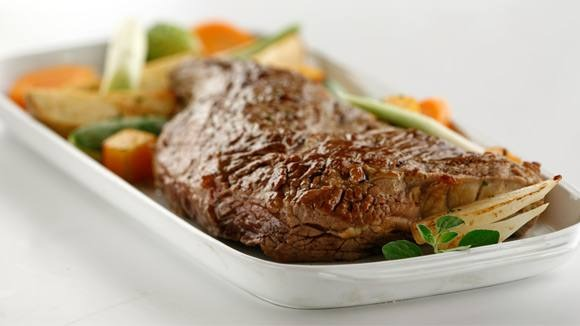

Recetas
- Colita de cuadril con vegetales asados
- Pollo al curry
- Salmón con arroz blanco
Ingredientes: 1 colita de cuadril (1,5 kg) - 200 gramos de champignones - 2 dientes de ajo - 1 sobrecito de Sabor en sobrecitos Tomate, Cebolla y Morrón Knorr de 7,5 gramos - 2 papas - 2 batatas - 2 cebollas - 1 morrón verde - 1 morrón rojo - 2 zanahorias - 4 cucharadas de aceite de oliva - 1 cubito de Sabor en Cubos Knorr de Panceta y Cebolla - 340 gramos de Salsa Lista Pomarola Knorr. Preparación: En una sartén con aceite de oliva dorá los champiñones cortados en láminas. Incorporá el ajo y condimentá con la mitad del saborizador de tomate, cebolla y morrón. Abrí la carne al medio y rellená con los hongos. Cerrá y atá. Sellá la carne en una sartén con aceite de todos lados y colocá en una bandeja para horno junto con los vegetales pelados y cortados. Condimentá la carne con el resto del saborizador. Cociná en horno medio fuerte por 25 minutos. Colocá los vegetales en un recipiente y agregale, mezclando siempre, un Sabor en Cubos de Panceta y Cebolla hasta que se disuelva.
Ingredientes: 2 Pechugas de pollo - 1 Cebolla de verdeo - 1 Diente de ajo - 5 gramos de jengibre fresco - 1 pizca de curry molido - 1 pizca de cúrcuma molida - 1 pizca de comino - 45 ml. de tomate triturado - 2 gramos de sal - Pimmienta negra molida a gusto - 200 ml. de leche de coco - 1 chorrito de aceite de oliva extra virgen - 1 puñado de cilantro fresco o perejil. Preparación: Cortar el pollo en piezas de un bocado. Picar la cebolleta y muy fino el diente de ajo, el jengibre. Calentar un poco de aceite en una sartén o cazuela y freír la cebolleta 2 minutos. Agregar el ajo, el jengibre, dar unas vueltas e incorporar el tomate. Pasado 1 minuto, agregar todas las especias y remover bien. Incorporar el pollo, salpimentar y mezclar. Cocinar a fuego fuerte unos pocos minutos, hasta que esté dorado por todas partes. Cubrir con la leche de coco y dejar reducir ligeramente. Servir con perejil o cilantro fresco picado.
Ingredientes: 4 filetes/porciones de salmón - 1/2 taza de salsa de soja - 1/2 taza de azúcar - 2 cdas de aceite de sésamo - 1 cda de salsa picante - 1 cda de jengibre fresco rallado o en polvo - ralladura de 1 lima - jugo de 2 limas - 1 cda de maicena - 4 cdas de agua - pimienta - 2 cebollas de verdeo (solo la parte verde) - semillas de sésamo. Preparación: Poner soja, azúcar, jengibre, ralladura y jugo de lima, salsa picante, aceite de sésamo en una olla. Agregar la maicena previamente diluída en el agua. Llevar al fuego y mezclar durante 5 minutos. Verter la salsa sobre las porciones de salmón acomodadas en fuente de horno. Llevar al horno durante 25/30 minutos. Servir con arroz blanco, sésamo y la cebolla de verdeo picada.